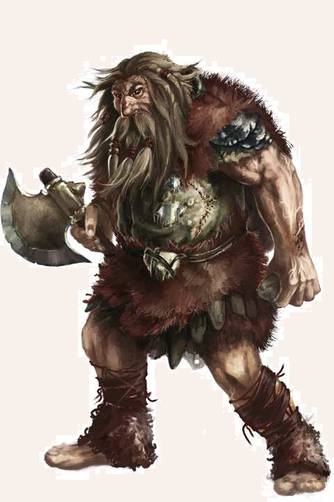

Trolle gibt es schon seit Urzeiten in Aventurien. Belege für ihre vergangene Kultur sind Ruinen, die sich in fast allen Gebirgen des Kontinents inden lassen. Ihr Ende fand diese Hochkultur während der sogenannten Trollkriege, in denen die Bosparaner unter Belen-Horas in den Jahren 873 bis 858 v.BF einen Großteil aller Trolle töteten. Die gut vier Schritt großen Hünen ähneln in ihrem Körperbau riesenhaften Menschen, weshalb sie bisweilen auch zu den Riesen gezählt werden. Ihre Haut ist lederartig bis borkig und männlichen Trollen sprießt oft ein voluminöser Bart. Trolle werden 300 bis 400 Jahre alt, wobei es auch deutlich ältere Exemplare geben kann. Sie tragen zumeist einfache Kleidung aus Leder und Fellen und verwenden simple Werkzeuge. Auf Wandmalereien aus den Zeiten von Belen-Horas sind jedoch auch schwer gerüstete Trolle abgebildet, die mit riesenhaften Äxten Breschen in die Reihen menschlicher Kämpen schlagen. Trolle gelten als ausgesprochen verschroben, launisch und sind leicht zu erzürnen. Sie wirken aufgrund ihres manchmal recht barbarischen Auftretens und der oft groben Sprache auf Nicht-Trolle dümmer, als sie in Wahrheit sind.
Verbreitung
Von den rund 1.000 Trollen Aventuriens leben die meisten in den nach ihnen benannten Trollzacken.
Einzelne Trolle leben auch in anderen nördlichen Gebirgen, ganz selten sogar in der Nähe menschlicher Siedlungen.
Manche begeben sich auch aus unbekannten Gründen auf Wanderschaft, möglicherweise um die alten Stätten ihrer Kultur zu besuchen.
Auf diesen Reisen kann es vorkommen, dass sie es sich unter Brücken gemütlich machen und Reisenden Geschenke und Süßigkeiten abpressen.
Lebensweise
Trolle leben meist in kleinen Familienverbänden, die Höhlen oder die riesigen Ruinen alter Trollfestungen bewohnen.
Neben diesen Festungen haben Trolle vor Urzeiten auch steinerne Stelen und sogenannte Trolltische erbaut, die nicht selten ein Hinweis auf magische Knotenpunkte sind.
Den Sagen nach sollen manche dieser Bauten Portale sein, die Zugang in Feenwelten bieten oder alte Festungen über magische Wege miteinander verbinden.
Gerüchten nach beherrschen Trolle eine eigene Form von Magie, die angeblich der druidischen ähnlich sein soll.
Manche Gelehrte behaupten hingegen, dass die Nähe der Trolle zu Steinen so tief in ihrem Bewusstsein verankert ist, dass sie Zauberwerk durch Felsmalereien und Kristalle wirken können.
So mag es sein, dass die Stelen und Trolltische einstmals Teile riesiger magischer Systeme waren, die der menschliche Geist kaum erfassen kann.
Der Umgang mit Trollen ist oft nicht leicht, denn sie gelten nicht zu Unrecht als stur und eigensinnig.
Zwar kann man sie in einem gewissen Rahmen mit Süßigkeiten bestechen, doch ihr manchmal etwas unbeholfenes Auftreten und ihr recht derber Humor sollte nicht darüber hinweg täuschen, dass sie ihr Gegenüber mit Misstrauen und Schläue betrachten.
Sollte ein Troll den Eindruck gewinnen, man will ihn betrügen oder beleidigen, kann er in rasende Wut verfallen.
Da Trolle kein Mitleid kennen, werden sie dann zu einem gnadenlosen Gegner, der im ersten Affekt mit Faust und baumstammgroßen Knüppeln um sich schlägt.
Im schlimmsten Fall, sofern ihn die kalte Trollwut überkommt, holt ein Troll die Waffen der alten Zeit hervor und legt sich sorgsam ausgetüftelte Schlachtpläne zurecht, um sich zu rächen.
Neben Süßigkeiten, auch in Form von Obst, Zuckerrüben oder den von ihnen geliebten Trollbirnen, scheinen viele Trolle Gefallen an Musik zu inden, auch wenn sie selbst keine Instrumente herstellen.
Manche von ihnen sammeln außerdem Miniaturen und Schnitzwerk.
Was ihre Sammlungen angeht, entwickeln die riesenhaften Gesellen eine überraschende Sorgfalt.
Während Trolle, die längere Zeit in der Nähe von Menschen gelebt haben, ein paar Brocken Garethi beherrschen, sprechen die meisten nur die urtümliche Sprache der Trolle.
Sie besteht aus komplexen Brumm- und Knurrlauten und wird in dreidimensionalen Raumbildern und Steinsetzungen "verschriftlicht".
Entsprechend schwierig ist es für Außenstehende, die komplexen Aufzeichnungen von Trollen zu entziffern.
Ogersche Namen:
weiblich: Bagoscha, Durschanna, Garlescha, Knopphild, Kraschta(r), Illkscha, Murscha
männlich: Bagsch, Bombatsch, Drollgomp, Durlatsch, Gumbalodsch, Kerbhold, Knopphold, Murdlatsch, Staumpff, Trolltatsch, Tumpatsch, Wungwatsch, Ylkholt
Troll
Größe: 3,50 bis 5,00 Schritt Körpergröße
Gewicht: 500 bis 700 Stein
Eigenschaften:
MU 17
KL 11
IN 12
CH 11
FF 09
GE 11
KO 25
KK 26
LeP: 120
AsP: -
KaP: -
INI: 14+1W6
SK: 3
ZK: 8
GS: 10
AW: 6
Waffenlos:
AT: 13
PA: 12
TP: 2W6+6
RW: mittel
Troll-Axt:
AT: 13
PA: 9
TP: 3W6+12
RW: lang
Großer Stein:
FK: 8
LZ: 3
TP: 3W6
RW: 5/25/40
RS/BE: 2/0
Aktionen: 1
Vor- und Nachteile: Schlechte Eigenschaft (Rachsucht, Jähzorn)
Sonderfertigkeiten: Mächtiger Schlag (Waffenlos, Troll-Axt; bei erfolgreichem Angriff müssen Gegner der Größen mittel und kleiner eine Probe auf Kraftakt erschwert um 3 bestehen, sofern sie nicht ausgewichen sind; ansonsten erhalten sie den Status Liegend), Schildspalter (Waffenlos, Troll-Axt), Wuchtschlag I (Waffenlos, Troll-Axt)
Talente:
Klettern 4 (17/11/26),
Körperbeherrschung 5 (11/11/25),
Kraftakt 14 (25/26/26),
Schwimmen 0 (11/25/26),
Selbstbeherrschung 8 (17/17/25),
Sinnesschärfe 7 (17/12/11),
Verbergen 2 (17/12/11),
Einschüchtern 8 (17/12/11),
Menschenkenntnis 3 (11/12/11),
Überreden 3 (17/12/11),
Willenskraft 3 (17/12/11)
Anzahl: 1 oder 1W6+1 (Orkbande) oder 2W20+10 (Orksippe)
Größenkategorie: groß
Typus: Kulturschaffender, humanoid
Kampfverhalten: Meist verlassen sich Trolle auf ihre abschreckende Größe und ihre überlegene Körperkraft, wollen sie etwa Reisende um ihre Vorräte erleichtern. Sie verbergen sich hierzu oft unter Brücken und fordern dann „Geschenke“. Ziehen Trolle in den Kampf, etwa um eine Schmähung zu rächen, können sie jedoch auch ausgeklügelte Taktiken entwickeln. In diesem Fall greifen sie oft auf zum Teil uralte und vererbte Waffen, meist Äxte oder Streitkolben, und auf Rüstungen aus Leder oder seltener auch aus Eisen zurück.
Flucht: Verlust von 50% der Lebenspunkte
Erfahren: KO 26 statt 25, KK 27 statt 26; LeP 125; Waffenlos AT 14 / PA 12 / TP 2W6+7, Troll-Axt: AT 14 / PA 9 / TP 3W6+13; Kraftakt 14 statt 12, Verbergen 4 statt 2, Einschüchtern 10 statt 8, Menschenkenntnis 5 statt 3, Willenskraft 5 statt 3
Kompetent: KO 27 statt 25, KK 28 statt 26; LeP 125; Waffenlos AT 15 / PA 12 / TP 2W6+8, Troll-Axt: AT 14 / PA 9 / TP 3W6+14; Kraftakt 16 statt 12, Verbergen 5 statt 2, Einschüchtern 12 statt 8, Menschenkenntnis 6 statt 3, Willenskraft 6 statt 3
Sonderregeln: Trollwut: Wenn ein Troll gereizt wird, sein Jähzorn anschlägt und ihm eine Probe auf Willenskraft misslingt, verfällt er in Trollwut. Er erhält dann den Status Blutrausch.
| LeP-Verlust | Schmerz | |
|---|---|---|
| 90 LeP (¾) | +1 Schmerz | |
| 60 LeP (½) | +1 Schmerz | |
| 30 LeP (¼) | +1 Schmerz | |
| 5 LeP und weniger | +1 Schmerz |